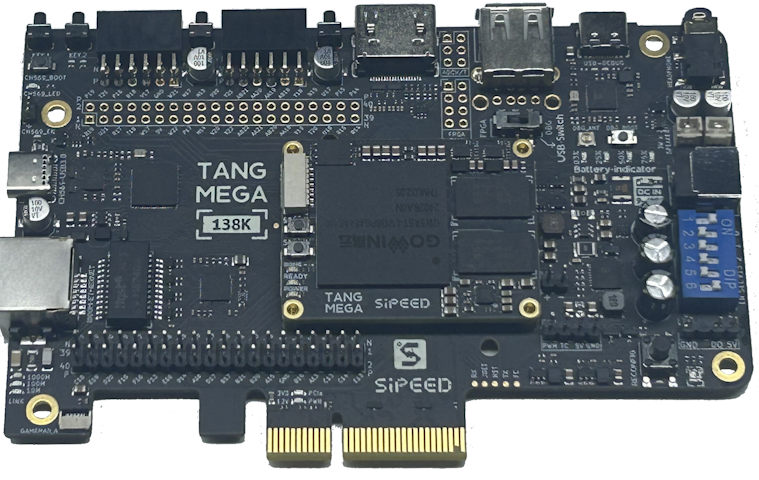

138K
Tang Mega 138K Dock
3D 全景交互图
鼠标左键拖拽旋转 · 滚轮缩放 · 点击任意接口查看引脚与功能
全部接口
⚡ 供电与调试
🖥️ 屏幕与视频
🌐 高速通信
🎵 音频与外设
🔌 排针扩展
3D透视
正俯视
左侧口
右侧口
📷 实物对照
接口名称
分类
简短说明
🖱️ 点击查看芯片与管脚详情

📷 官方实物正视图 (高清晰度原厂贴片布局)
返回 3D 交互视角 ✕
🔄
左键拖拽
：3D空间旋转
🔍
滚轮
：缩放模型
🎯
左键单击
：聚焦选中接口
✨
双击空白
：复位视角